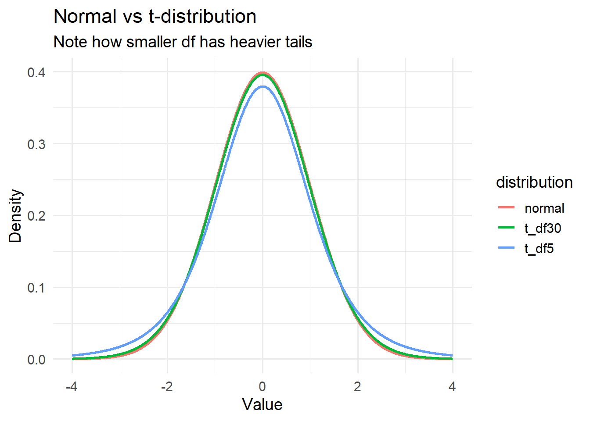

William Sealy Gosset — chemist, brewer, and reluctant revolutionary — was not a man of abstraction. Deep in the cellars of the Guinness Brewery in Dublin, he worked with barley, yeast, and numbers scraped together by hand.
His problem was one of practicality. Every day, he ran experiments with tiny batches of beer — maybe five, maybe ten samples. He was tweaking variables: changing the barley variety, adjusting fermentation times, testing a new filter. And at each turn, he had to decide: Is this change truly better, or is the difference just random?
What frustrated him was the prevailing assumption handed down from the likes of Galton and Pearson: that the variance you calculate from your data is the population variance.
“But how can it be?” he wondered. “We only have five observations! Surely the spread we see isn’t the true spread — it’s just one estimate.”
Gosset realised that estimating variance from a small sample introduces an extra layer of uncertainty. So he set about creating a method to handle this properly — and gave us the t-distribution.
From Normal to t-Distribution
n the late 19th century, Francis Galton had popularised the bell-shaped curve — observing that traits like height tended to cluster symmetrically around a central value, with fewer observations as you moved away in either direction. He believed this was a natural law of heredity and variation.
But it was Carl Friedrich Gauss, decades earlier, who had formulated the mathematical structure of that bell. The normal distribution, or Gaussian distribution, provided a precise formula for how data should be distributed if randomness played out fairly. Crucially, that formula depends on two parameters: the mean (\(\mu\)) and the variance \(\sigma\). In fact, the variance appears in the exponent of Gauss’s formula, governing the spread of the curve. The larger the variance, the wider the bell. This made variance not just a descriptor of spread, but a core component of the entire probability model.
And so, in the world of Pearson and Galton, the assumption was simple: If you know the population variance, the sample mean \(\bar{x}\) follows:
From this assumption, you could do a bunch of stuff, like calculating the Z-score:
\[
Z = \frac{\bar{x} - \mu}{\sigma / \sqrt{n}}
\]
And from there, determine how likely your sample mean \(\bar{x}\) was, assuming a known population mean \(\mu\). But this entire framework leans heavily on the assumption that \(\sigma\) is known — that variance is a given constant, not something estimated from data. This is precisely what Gosset challenged. In most real-world situations, \(\sigma\) is unknown. Therefore, Gosset decided to do away with that assumption. He replaced \(\sigma\) with the actual sample standard deviation\(s\):
\[
t = \frac{\bar{x} - \mu}{s / \sqrt{n}}
\]
This creates a ratio of two random variables — one for the sample mean, one for the estimated standard deviation — resulting in a wider, more cautious distribution: the t-distribution.
Visualising the Normal vs t-Distribution
Code
library(ggplot2)library(dplyr)library(tibble)library(tidyr)set.seed(123)# Grid of x valuesx_vals <-seq(-4, 4, length.out =2500)# Compute densities with matching lengthsdf <-tibble(x = x_vals,normal =dnorm(x_vals),t_df5 =dt(x_vals, df =5),t_df30 =dt(x_vals, df =30))df_long <- df %>%pivot_longer(cols =c(normal, t_df5, t_df30),names_to ="distribution",values_to ="density")ggplot(df_long, aes(x = x, y = density, colour = distribution)) +geom_line(size =1) +labs(title ="Normal vs t-distribution",subtitle ="Note how smaller df has heavier tails",x ="Value",y ="Density" ) +theme_minimal(base_size =14)

Understanding the t-Statistic
To understand the t-statistic, recall:
\[
t = \frac{\bar{x} - \mu}{s / \sqrt{n}}
\]
Where: - \(\bar{x}\) is the sample mean - \(\mu\) is the population mean under the null hypothesis - \(s\) is the sample standard deviation - \(n\) is the sample size
The result tells us how many standard errors the sample mean is from the hypothesised population mean.
Critical Values and Rejection Regions
When performing a hypothesis test, we compare the calculated t-statistic to a critical value from the t-distribution:
n <-10x_bar <-102s <-5mu <-100# Calculate t-statisticse <- s /sqrt(n)t_stat <- (x_bar - mu) / set_stat
[1] 1.264911
Compare with critical value:
Code
critical_val <-qt(1- alpha /2, df = n -1)t_stat > critical_val # is the statistic beyond the threshold?
[1] FALSE
Doing it in R
Code
data <-c(101, 103, 98, 100, 105, 99, 102, 101, 100, 104)t.test(data, mu =100) # two-tailed by default
One Sample t-test
data: data
t = 1.8571, df = 9, p-value = 0.09625
alternative hypothesis: true mean is not equal to 100
95 percent confidence interval:
99.71649 102.88351
sample estimates:
mean of x
101.3
One-tailed:
Code
t.test(data, mu =100, alternative ="greater")
One Sample t-test
data: data
t = 1.8571, df = 9, p-value = 0.04813
alternative hypothesis: true mean is greater than 100
95 percent confidence interval:
100.0168 Inf
sample estimates:
mean of x
101.3
Conclusion
Gosset’s leap wasn’t just about beer — it was about honesty in statistics. He recognised that variance matters, and that when you don’t know it, you need a distribution that reflects that uncertainty. The t-distribution gave us a principled way to test hypotheses when data is scarce.
Today, the t-test is one of the most widely used tools in science. It reminds us that good inference isn’t just about what we observe — it’s about how confident we are in what we don’t.
In the cellars of Guinness, Gosset brewed not just beer, but a new way of thinking about data.
Source Code
---title: "The t-Test story"format: html: toc: true theme: cosmo code-fold: true code-tools: trueexecute: echo: true warning: false message: false---## IntroductionWilliam Sealy Gosset — chemist, brewer, and reluctant revolutionary — was not a man of abstraction. Deep in the cellars of the Guinness Brewery in Dublin, he worked with barley, yeast, and numbers scraped together by hand.His problem was one of **practicality**. Every day, he ran experiments with **tiny batches** of beer — maybe five, maybe ten samples. He was tweaking variables: changing the barley variety, adjusting fermentation times, testing a new filter. And at each turn, he had to decide: *Is this change truly better, or is the difference just random?*What frustrated him was the prevailing assumption handed down from the likes of Galton and Pearson: that **the variance you calculate from your data is the population variance**.> "But how can it be?" he wondered. "We only have five observations! Surely the spread we see isn’t the true spread — it’s just one estimate."Gosset realised that estimating variance from a small sample introduces an **extra layer of uncertainty**. So he set about creating a method to handle this properly — and gave us the **t-distribution**.## From Normal to t-Distributionn the late 19th century, Francis Galton had popularised the bell-shaped curve — observing that traits like height tended to cluster symmetrically around a central value, with fewer observations as you moved away in either direction. He believed this was a natural law of heredity and variation.But it was Carl Friedrich Gauss, decades earlier, who had formulated the mathematical structure of that bell. The normal distribution, or Gaussian distribution, provided a precise formula for how data should be distributed if randomness played out fairly. Crucially, that formula depends on two parameters: the mean ($\mu$) and the variance $\sigma$. In fact, the variance appears in the exponent of Gauss’s formula, governing the spread of the curve. The larger the variance, the wider the bell. This made variance not just a descriptor of spread, but a core component of the entire probability model.And so, in the world of Pearson and Galton, the assumption was simple: If you know the population variance, the sample mean $\bar{x}$ follows:$$\bar{x} \sim N\left( \mu, \frac{\sigma^2}{n} \right)$$From this assumption, you could do a bunch of stuff, like calculating the **Z-score**:$$Z = \frac{\bar{x} - \mu}{\sigma / \sqrt{n}}$$And from there, determine how likely your sample mean $\bar{x}$ was, assuming a known population mean $\mu$. ***But*** this entire framework leans heavily on the assumption that $\sigma$ is known — that variance is a given constant, not something estimated from data. This is precisely what Gosset challenged. In most real-world situations, $\sigma$ is **unknown**. Therefore, Gosset decided to do away with that assumption. He replaced $\sigma$ with the actual **sample standard deviation** $s$:$$t = \frac{\bar{x} - \mu}{s / \sqrt{n}}$$This creates a ratio of **two random variables** — one for the sample mean, one for the estimated standard deviation — resulting in a **wider, more cautious distribution**: the t-distribution.## Visualising the Normal vs t-Distribution```{r}library(ggplot2)library(dplyr)library(tibble)library(tidyr)set.seed(123)# Grid of x valuesx_vals <-seq(-4, 4, length.out =2500)# Compute densities with matching lengthsdf <-tibble(x = x_vals,normal =dnorm(x_vals),t_df5 =dt(x_vals, df =5),t_df30 =dt(x_vals, df =30))df_long <- df %>%pivot_longer(cols =c(normal, t_df5, t_df30),names_to ="distribution",values_to ="density")ggplot(df_long, aes(x = x, y = density, colour = distribution)) +geom_line(size =1) +labs(title ="Normal vs t-distribution",subtitle ="Note how smaller df has heavier tails",x ="Value",y ="Density" ) +theme_minimal(base_size =14)```## Understanding the t-StatisticTo understand the **t-statistic**, recall:$$t = \frac{\bar{x} - \mu}{s / \sqrt{n}}$$Where:- $\bar{x}$ is the sample mean- $\mu$ is the population mean under the null hypothesis- $s$ is the sample standard deviation- $n$ is the sample sizeThe result tells us **how many standard errors the sample mean is from the hypothesised population mean**.## Critical Values and Rejection RegionsWhen performing a hypothesis test, we compare the calculated t-statistic to a **critical value** from the t-distribution:```{r}df <-9alpha <-0.05# two-tailed testcritical_t <-qt(1- alpha /2, df)critical_t```We reject the null hypothesis if the t-statistic falls in the rejection region beyond this value.```{r}library(ggplot2)# parametersdf <-20# degrees of freedomalpha <-0.05# generate t-distribution curvex <-seq(-4, 4, length.out =500)y <-dt(x, df = df)df_curve <-data.frame(x, y)# critical value (two-tailed)crit <-qt(1- alpha /2, df = df)ggplot(df_curve, aes(x, y)) +geom_line(color ="steelblue", size =1.2) +# Shade left tailgeom_area(data =subset(df_curve, x <-crit),aes(x, y), fill ="red", alpha =0.4) +# Shade right tailgeom_area(data =subset(df_curve, x > crit),aes(x, y), fill ="red", alpha =0.4) +# Critical value linesgeom_vline(xintercept =c(-crit, crit),linetype ="dashed", color ="red") +labs(title ="t-Distribution with Rejection Regions",subtitle =paste0("Two-tailed test, α = ", alpha, ", df = ", df),x ="t-statistic",y ="Density" ) +theme_minimal(base_size =14)```## One-Tailed vs Two-Tailed Tests- A **two-tailed test** checks if $\bar{x}$ is **different** from $\mu$.- A **one-tailed test** checks if $\bar{x}$ is **greater than or less than** $\mu$, depending on direction.```{r}# One-tailed critical value (right-tailed test)qt(1- alpha, df)```## Manual ExampleSuppose:- Sample size $n = 10$- $\bar{x} = 102$- $s = 5$- Test against $\mu = 100$```{r}n <-10x_bar <-102s <-5mu <-100# Calculate t-statisticse <- s /sqrt(n)t_stat <- (x_bar - mu) / set_stat```Compare with critical value:```{r}critical_val <-qt(1- alpha /2, df = n -1)t_stat > critical_val # is the statistic beyond the threshold?```## Doing it in R```{r}data <-c(101, 103, 98, 100, 105, 99, 102, 101, 100, 104)t.test(data, mu =100) # two-tailed by default```One-tailed:```{r}t.test(data, mu =100, alternative ="greater")```## ConclusionGosset's leap wasn’t just about beer — it was about honesty in statistics. He recognised that **variance matters**, and that when you don’t know it, you need a distribution that reflects that uncertainty. The **t-distribution** gave us a principled way to test hypotheses when data is scarce.Today, the **t-test** is one of the most widely used tools in science. It reminds us that good inference isn’t just about what we observe — it’s about how confident we are in what we *don’t*.> In the cellars of Guinness, Gosset brewed not just beer, but a new way of thinking about data.